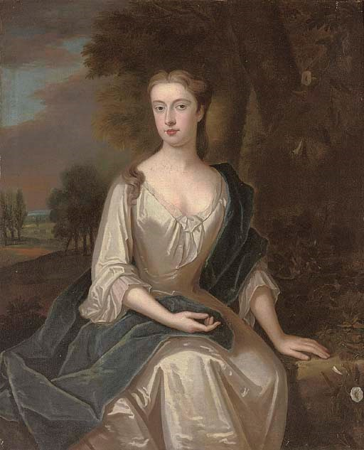
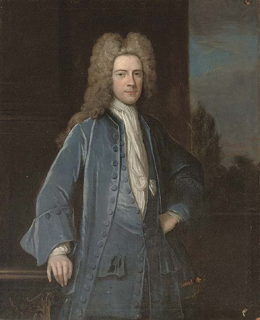
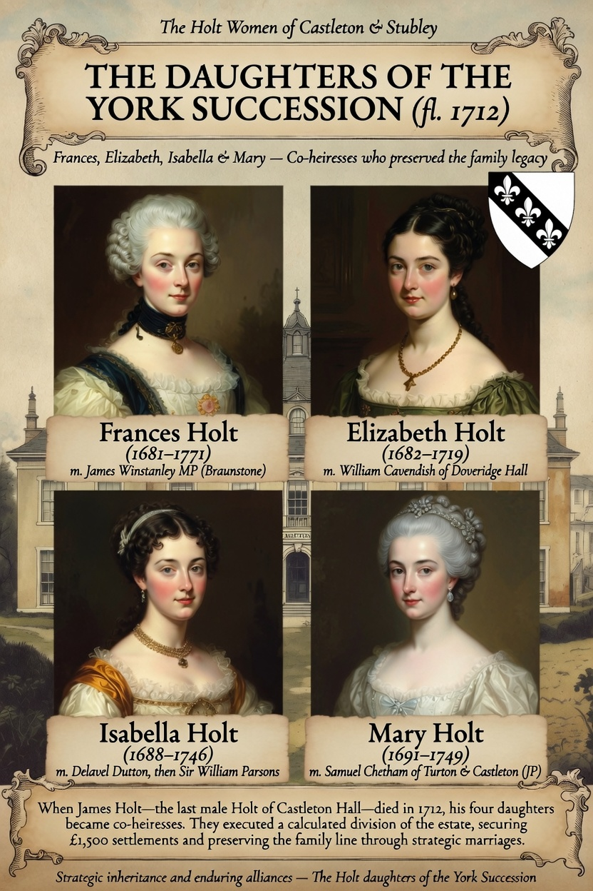

Mary Holt of Stubley (c. 1540–c. 1590): The Tudor Shield of the Lineage
- The inheritance crisis: As Robert’s daughter, Mary became the sole pivot point of the family's geographic survival.
- A strategic union: To prevent the historic heartland from being absorbed into rival Lancashire families, Mary orchestrated a strategic marriage alliance with her kinsman, Charles Holt of Whitwell.
- Preserving the name: Charles was an un-ennobled yeoman who did not possess his own coat of arms. Through his marriage to Mary, he legally assumed the heraldic mantle of the House of Stubley. Mary’s calculation successfully kept the ancestral manor intact, ensuring the Holt name continued to dominate the Rochdale rolls into the Stuart era.
Agnes Holt of Castleton (fl. 1523): The Master of the Dower
- Securing legal autonomy: In 1523, her husband, Adam Holt ("Gentleman of ye Castleton"), executed a complex land settlement dividing his estates among their four sons. This was a standard mechanism for ensuring orderly succession.
- The dower precedent: Agnes successfully negotiated a strict, legally binding dower clause within the deed. This clause guaranteed her independent financial autonomy, lifelong control over a defined portion of the Castleton estate, protection from displacement by her sons or their heirs. For a woman in early Tudor England, this was unusually assertive and forward thinking. Her negotiated rights created a structural safety net that later Holt women would benefit from making Agnes one of the earliest documented examples of a Holt woman shaping the family’s legal and economic framework.
Dame Dorothy Holt (fl. 1550–1562): The Matriarch of Gristlehurst
- Executor of the estate: Sir Thomas appointed Dame Dorothy as co‑executor alongside their son Ralph. This role indicates she was trusted to oversee accounts, property, and household affairs during the transition to the next generation — a responsibility not commonly granted to women unless they were capable and respected.
- Life interest in household plate: She was granted the use of valuable household items for her lifetime, including the silver salt, the pounced silver bowl, and the Apostle spoons. This provision ensured her continued authority within the household and reflects her status within a knightly family.
- Keeper of the heraldic household: As the wife of a knight with armour and heraldic insignia appointed by the King of Heralds, Dame Dorothy presided over a household of ceremonial objects, plate, textiles, and horses. Her position placed her firmly within the Lancashire gentry and the social world of mid‑Tudor knighthood.
Dorothy Holt of Castleton (c. 1625–c. 1690): The Civil War Matriarch
- A strategic alliance: In 1649, amidst the political fallout of the Commonwealth era, Dorothy executed a high-stakes marriage to John Entwistle of Foxholes.
- Merging the horizons: The Entwistles and the Holts were the two dominant, often competing gentry forces in the Rochdale valley. Dorothy’s marriage served as a crucial diplomatic bridge, aligning the family's regional legal and political interests during a period of massive political instability and changing land tenures.
The Daughters of the York Succession (fl. 1712): Frances, Elizabeth, Isabella, and Mary

Title/Description of Subject Matter: Portrait of a lady, traditionally identified as Mrs Chetham (1691-1749), née Mary Holt
Artist/Author/Creator of Subject Matter: Circle of Maria Verelst (Vienna 1680-1744)
Christie’s Copyright Credit: © 2007 Christie’s Images Limited

Title/Description of Subject Matter: Portrait of a gentleman, traditionally identified as Samuel Chetham (1676-1745), of Turton and Castleton
Artist/Author/Creator of Subject Matter: Circle of Jonathan Richardson (London 1665-1745)
Christie’s Copyright Credit: © 2007 Christie’s Images Limited
When James Holt, the last male Holt of Castleton Hall died in York in 1712, he left behind no sons. Instead of allowing the estate to fall into immediate legal chaos, his four daughters executed a highly calculated liquidation of the family's assets.
- The £1,500 settlements: Acting as a unified block of co-heirs, Frances, Elizabeth, Isabella, and Mary secured massive personal fortunes of £1,500 each (a fortune in the early 18th century).
- Redrawing the map: Rather than remaining passive caretakers of a declining estate, they systematically managed the transition of Castleton Hall, paving the way for its sale to the wealthy merchant Samuel Chetham. Their financial pragmatism allowed the sisters to scatter across the North, embedding the family's capital into new regional networks.

URL references: Castleton Hall - Holt Ancestry | Heralds' Visitations - Holt Ancestry | Rochdale Parish Records - British History Online